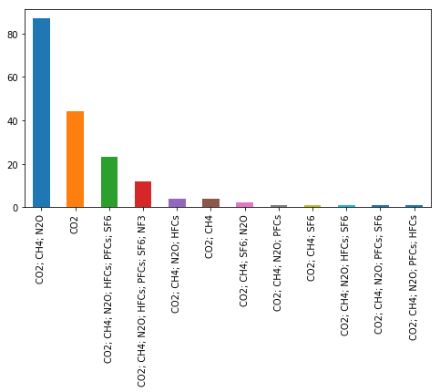

from matplotlib.pyplot import *
%matplotlib inlineStep 2. Separate CO2 emissions from non-CO2 GHGs in CDP
Here, we estimate the contribution of CH4 and correct it out from the CDP Scope-1 values.
A region label was also assigned to CDP cities corresponding to definitions used in carbonn.
import numpy as np
from matplotlib import pyplot as pltimport pandas as pd
import collections
from collections import Counter
import os
import csvpd.set_option('display.max_colwidth', -1)Variables
fsize = (8,4)var_city2016 = 'City Short Name (CDP)'
var_pop2016 = 'Current Population (CDP)'
#Emissions
var_tot2016 = 'Total City-wide Emissions (metric tonnes CO2e) (CDP)'
var_s1_2016 = 'Total Scope 1 Emissions (metric tonnes CO2e) (CDP)'
var_s2_2016 = 'Total Scope 2 Emissions (metric tonnes CO2e) (CDP)'
var_gases2016 = 'Gases included (CDP)'# GWP coefficient for CH4 from Table 5.2, taken from IPCC 5th Assessment Report
# http://www.iclei.org/fileadmin/user_upload/ICLEI_WS/Documents/Climate/GPC_12-8-14_1_.pdf
GWP_CH4 = 28#Region labels to add for CDP using regions as defined by carbonn
# 'Europe', 'Latin America & Caribbean', 'North America', 'Oceania',
# 'East Asia','South Asia', 'Southeast Asia', 'Africa',
# 'North Africa, Middle East, West Asia'
groupEurope = ['Amsterdam','Athens','Barcelona',
'Barnsley, Doncaster and Rotherham','Barreiro', 'Basel',
'Bath and North East Somerset, North Somerset and South Gloucestershire',
'Bedfordshire CC','Belfast','Berkshire', 'Berlin', 'Berne',
'Birmingham', 'Blackburn with Darwen','Bologna','Bournemouth', 'Bradford',
'Bremen', 'Bridgend and Neath Port Talbot', 'Brighton and Hove', 'Bristol', 'Brussels',
'Buckinghamshire CC','Calderdale, Kirklees and Wakefield','Cambridgeshire CC',
'Cardiff', 'Cascais', 'Central Valleys (Wales)', 'Cheshire CC', 'Clackmannanshire and Fife',
'Darlington','Derby','Dublin', 'Durham CC', 'Dusseldorf',
'East Ayrshire and North Ayrshire mainland', 'East Cumbria','East Derbyshire',
'East Dunbartonshire, West Dunbartonshire and Helensburgh & Lomond',
'East Lothian and Midlothian', 'East Merseyside',
'East Riding of Yorkshire', 'East Sussex CC','East of Northern Ireland', 'Edinburgh',
'Essex CC','Falkirk', 'Faro','Ferrara','Flintshire and Wrexham','Frankfurt','Geneva',
'Genova', 'Glasgow','Gloucestershire','Graz','Gwent Valleys','Halton and Warrington',
'Hamburg','Hampshire CC','Hartlepool and Stockton-on-Tees','Heidelberg', 'Helsinki',
'Herefordshire, County of','Hertfordshire', 'Inverclyde, East Renfrewshire and Renfrewshire',
'Kent CC','Kingston upon Hull','Lancashire CC', 'Magdeburg',
'Lausanne', 'Leeds', 'Leicester', 'Leicestershire CC and Rutland','Lincolnshire',
'Lisbon', 'Liverpool','London','Luton', 'Lyon', 'Madrid','Manchester','Marseille',
'Medway','Milano', 'Milton Keynes','Moita','Monmouthshire and Newport','Munich', 'Nancy',
'Nantes','Newcastle', 'Nice','Norfolk','North Lanarkshire', 'North Nottinghamshire',
'North Yorkshire CC', 'North and North East Lincolnshire','Northamptonshire', 'Nottingham',
'Outer Belfast', 'Oxfordshire','Paris','Peterborough, UK','Piacenza','Plymouth','Porto',
'Portsmouth', 'Prague','Ravenna','Roma','Rotterdam','Ruhr', 'Santarém','Sefton',
'Sheffield','Shropshire CC','Somerset','South Ayrshire', 'South Lanarkshire', 'South Nottinghamshire',
'South and West Derbyshire', 'Southampton', 'Southend-on-Sea','Staffordshire CC',
'Stoke-on-Trent','Stuttgart', 'Suffolk', 'Sunderland','Surrey','Swansea', 'Swindon',
'Telford and Wrekin', 'Thurrock','Torino','Torres Vedras','Tyneside','Udine','Venezia',
'Vienna','Warwickshire','West Cumbria','West Lothian', 'West Sussex','Wiltshire CC',
'Wirral', 'Worcestershire','York','Zaragoza','Zürich', 'Águeda',
'Belgrade','Bratislava','Bucharest','Budapest','Cracow','Istanbul',
'Kiev', 'Ljubljana','Moscow','Riga','Sofia','Tallinn','Vilnius','Warsaw','Zagreb',
'Aarhus', 'Aerøskøbing', 'Copenhagen','Gladsaxe Kommune','Gävle',
'Halmstad', 'Hjørring','Hoeje-Taastrup Kommune','Jönköping','Karlstad','Lahti','Linköping',
'Norrköping','Oslo', 'Reykjavík','Skåne county','Stockholm','Sundsvall','Turku','Umeå',
'Uppsala','Västra Götaland county', 'Växjö','Örebro'
]
groupNAmer = ['Abington','Ajax, ON','Albany',
'Alton, IL', 'Arlington, VA', 'Aspen and Pitkin County','Atlanta',
'Austin', 'Baltimore','Benicia','Blacksburg','Boston', 'Boulder','Brisbane, CA',
'Burlington','Calgary', 'Chicago','Cleveland', 'Columbus','Dallas',
'Davis, CA','Denver','Detroit', 'District of Columbia', 'Durham','Edmonton',
'Emeryville, CA','Eugene','Flagstaff','Fort Collins','Hamilton, ON','Hayward',
'Hermosa Beach, CA','Houston','Indianapolis','Iowa','Knoxville','Lake Forest, IL','Lakewood',
'Lancaster, PA','Las Vegas','London, ON', 'Los Altos Hills','Los Angeles',
'Minneapolis','Montreal','Nashville and Davidson','New Orleans',
'New York City','North Vancouver','Oakland','Ottawa','Palo Alto',
'Peterborough, ON', 'Philadelphia', 'Phoenix','Piedmont, CA','Pittsburgh',
'Portland, OR','Reno','Richmond, VA','Roanoke','San Antonio', 'San Diego',
'San Francisco', 'Santa Monica','Savannah','Seattle','Somerville, MA',
'St Louis','Toronto','Tucson','University City, MO','Vancouver',
'Washington DC', 'West Hollywood','Windsor, ON','Winnipeg',
'Yonkers'
]
groupOceania = ['Adelaide', 'Auckland','Brisbane','Canberra',
'Melbourne','Perth', 'Sydney','Wellington'
]
groupLatinAmer =['Belo Horizonte', 'Bogotá', 'Brasília','Buenos Aires','Caracas',
'Curitiba', 'Florianópolis', 'Goiânia', 'Guaratinguetá','La Paz','Lima','Mexico City',
'Palmas','Porto Alegre','Quito','Recife','Rio de Janeiro', 'Salvador', 'San Luis Potosí',
'Santiago', 'Santiago de Cali','Santiago de Guayaquil', 'Sao Paulo','Sorocaba'
]
#for North Africa, Middle East, West Asia
#NB: Put Bornova and Kadiovacik in Turkey in this group to be consistent with carbonn Istanbul and Izmir
groupNorthAfrica = ['Amman','Bornova','Kadiovacik']
#for Africa
groupAfrica = ['Johannesburg', 'Pretoria Tshwane', 'Cape Town', 'Durban', 'Addis Ababa', 'Lagos']
#for'East Asia' (Taiwan, South Korea, Japan, China [Hong Kong])
groupEastAsia = ['Pingtung', 'Yilan', 'Taipei City', 'New Taipei', 'Kaohsiung', 'Taoyuan',
'Suwon', 'Incheon', 'Seoul',
'Tokyo', 'Okayama', 'Yokohama', 'Nagoya', 'Hiroshima', 'Hong Kong'
]
#for Southeast Asia (Philippines, Indonesia)
groupSoutheastAsia = ['Makati', 'Batangas', 'Bogor', 'Jakarta'
]Functions
def tag_column_names_with_datasetname(df, tagname):
""" Add to column name dataset from which column was obtained"""
col_names = list(df)
for cname in col_names:
if cname != 'Account Number':
df.rename(columns = {cname:cname + ' (' + tagname + ')'}, inplace = True)
return dfdef bar_strDim(df, dim):
""" Bar plot of dimension string values in df column"""
s = df[dim]
counts = s.value_counts()
print counts
ax = counts.iloc[:len(counts)].plot(kind="bar", figsize=fsize)
plt.show()Estimate CO2-only values from CO2-eq for Total Emissions and Scope1
For emissions that include gases other than CO2.
For city i in country j, CO2_scope1i:
Lower bound = CO2eq_scope1i - [CH4waste/cap]j x capi x GWP_CH4
Upper bound = CO2eq_scope1i - [(CH4waste + corrected_CH4natgas)/cap]j x capi x GWP_CH4
Read data
QA/QC-checked CDP data output from Methods1_CDP2016_QAQC.ipynb
fname = 'DATA/INTERMEDIATE_FILES/cdp_with_quality_flags.tsv'
df = pd.read_csv(fname, sep='\t')
df.drop('Unnamed: 0',1, inplace=True)print df.shape
df.head(2)(187, 31)| Account Number (CDP) | City Name (CDP) | Country (CDP) | City Short Name (CDP) | C40 (CDP) | Reporting Year (CDP) | Measurement Year (CDP) | Boundary (CDP) | Primary Methodology (CDP) | Methodology Details (CDP) | ... | GDP Source (CDP) | Average annual temperature (in Celsius) (CDP) | Land area (in square km) (CDP) | Average altitude (m) (CDP) | City Location (CDP) | Country Location (CDP) | Measurement year only (CDP) | scope fraction (CDP) | CDP2016 data edited (CDP) | Emissions Quality Flag (CDP) | |
|---|---|---|---|---|---|---|---|---|---|---|---|---|---|---|---|---|---|---|---|---|---|
| 0 | 57347 | Pingtung County Government | Taiwan | Pingtung | NaN | 2017.0 | 2013-01-03 03:13:00 | Administrative boundary of a local government | Global Protocol for Community-Scale Greenhouse Gas Emissions Inventories (GPC), (WRI, C40 and ICLEI) | NaN | ... | NaN | 25.0 | 2775.0 | 750.0 | (22.551976, 120.54876) | (23.69781, 120.960515) | 2013.0 | 1.0 | Replaced by CDP2017 data. Reason: TOT >> s1+s2 (Case 2b) in CDP2016. Soln: Replace with CDP2017 data (no edits required). | B |
| 1 | 31170 | Metropolitan Municipality of Lima | Peru | Lima | C40 | 2016.0 | 2012-12-31 00:00:00 | A metropolitan area | Global Protocol for Community-Scale Greenhouse Gas Emissions Inventories (GPC), (WRI, C40 and ICLEI) | La metodología Global Protocol for Community- scale Greenhouse Gas emissions (GPC) establece que los límites pueden definirse en cualquiera de tres niveles: Internacional, inter-ciudades/subnacional, o al interior de la ciudad. | ... | INEI | 18.0 | 2672.0 | 154.0 | (-12.046374, -77.042793) | (-9.189967, -75.015152) | 2012.0 | 1.0 | CDP2016 TOT recalculated by summing both CDP2016 scopes. | A |
2 rows × 31 columns
#Rename 'Country (CDP)' to 'Country' to allow merge with scaling factor dataframe (see below)
df.rename(columns = {'Country (CDP)':'Country'}, inplace = True)Add in population for La Paz deleted in latest version of online CDP2016 dataset
Take value from previous version (no longer online).
print df.loc[df['City Short Name (CDP)'] == 'La Paz', 'Current Population (CDP)']
df.loc[df['City Short Name (CDP)'] == 'La Paz', 'Current Population (CDP)'] = 789541
print df.loc[df['City Short Name (CDP)'] == 'La Paz', 'Current Population (CDP)']97 NaN
Name: Current Population (CDP), dtype: float64
97 789541.0
Name: Current Population (CDP), dtype: float64Read emission scaling factor file
fcoeff = 'DATA/ORIGINAL_ANCILLARY_SOURCEFILES/Calculate_CH4_SF_cities_corrected_NATGAS.csv'
df_coeff = pd.read_csv(fcoeff, sep='\,')
print df_coeff.shape
list(df_coeff)(42, 8)/homel/cnangini/anaconda2/lib/python2.7/site-packages/ipykernel_launcher.py:3: ParserWarning: Falling back to the 'python' engine because the 'c' engine does not support regex separators (separators > 1 char and different from '\s+' are interpreted as regex); you can avoid this warning by specifying engine='python'.
This is separate from the ipykernel package so we can avoid doing imports until['Country',
'CH4_waste/person',
'CH4_(waste+natgas)/person',
'corrected CH4_(waste+natgas)/person',
'Production (m3)',
'Exports (m3)',
'Export/Production',
'data from CIA World Fact Book for 2014']Stats
Gases Included
df[var_gases2016].count() 181df.loc[df[var_gases2016].isnull(), var_city2016].count() #6 cities missing gases6df[var_gases2016].unique()array(['CO2; CH4; N2O', 'CO2', 'CO2; PFCs; CH4; SF6; N2O; HFCs',
'CO2; PFCs; CH4; SF6; N2O; NF3; HFCs', 'CO2; CH4; N2O; HFCs',
'CO2; PFCs; CH4; N2O', 'CO2; PFCs; CH4; SF6; N2O', 'CO2; CH4',
'CO2; CH4; SF6; N2O; HFCs', 'CO2; CH4; SF6; N2O', nan,
'CO2; PFCs; CH4; N2O; HFCs', 'CO2; CH4; SF6'], dtype=object)#Re-order gases in order of:
#'CO2; CH4; N2O; HFCs; PFCs; SF6; NF3'
df.loc[df[var_gases2016] == 'CO2; PFCs; CH4; N2O', var_gases2016] = 'CO2; CH4; N2O; PFCs'
df.loc[df[var_gases2016] == 'CO2; PFCs; CH4; SF6; N2O', var_gases2016] = 'CO2; CH4; N2O; PFCs; SF6'
df.loc[df[var_gases2016] == 'CO2; PFCs; CH4; N2O; HFCs', var_gases2016] = 'CO2; CH4; N2O; PFCs; HFCs'
df.loc[df[var_gases2016] == 'CO2; CH4; SF6; N2O; HFCs', var_gases2016] = 'CO2; CH4; N2O; HFCs; SF6'
df.loc[df[var_gases2016] == 'CO2; PFCs; CH4; SF6; N2O; HFCs', var_gases2016] = 'CO2; CH4; N2O; HFCs; PFCs; SF6'
df.loc[df[var_gases2016] == 'CO2; PFCs; CH4; SF6; N2O; NF3; HFCs', var_gases2016] = 'CO2; CH4; N2O; HFCs; PFCs; SF6; NF3'bar_strDim(df, var_gases2016)CO2; CH4; N2O 87
CO2 44
CO2; CH4; N2O; HFCs; PFCs; SF6 23
CO2; CH4; N2O; HFCs; PFCs; SF6; NF3 12
CO2; CH4; N2O; HFCs 4
CO2; CH4 4
CO2; CH4; SF6; N2O 2
CO2; CH4; N2O; PFCs 1
CO2; CH4; SF6 1
CO2; CH4; N2O; HFCs; SF6 1
CO2; CH4; N2O; PFCs; SF6 1
CO2; CH4; N2O; PFCs; HFCs 1
Name: Gases included (CDP), dtype: int64
Merge emissions scaling factors into dataframe
Merge along ‘Country’ column
df=df.merge(df_coeff, how='left')Calculate upper and lower emission bounds using scaling factors and compute mean
Exclude CO2-only values
# Add in upper and lower bound
#Total emissions
df.loc[(df[var_gases2016] != 'CO2'), 'TOT lower bound [tCO2]'] = df[var_tot2016] - df['corrected CH4_(waste+natgas)/person']*df[var_pop2016]*GWP_CH4
df.loc[(df[var_gases2016] != 'CO2'), 'TOT upper bound [tCO2]'] = df[var_tot2016] - df['CH4_waste/person']*df[var_pop2016]*GWP_CH4
#Scope1
df.loc[(df[var_gases2016] != 'CO2'), 'S1 lower bound [tCO2]'] = df[var_s1_2016] - df['corrected CH4_(waste+natgas)/person']*df[var_pop2016]*GWP_CH4
df.loc[(df[var_gases2016] != 'CO2'), 'S1 upper bound [tCO2]'] = df[var_s1_2016] - df['CH4_waste/person']*df[var_pop2016]*GWP_CH4# Take mean of lower and upper bounds
df['TOT mean [tCO2]'] = df[['TOT lower bound [tCO2]', 'TOT upper bound [tCO2]']].mean(axis=1)
df['S1 mean [tCO2]'] = df[['S1 lower bound [tCO2]', 'S1 upper bound [tCO2]']].mean(axis=1)df[[
var_tot2016,
'TOT lower bound [tCO2]','TOT upper bound [tCO2]','TOT mean [tCO2]',
'Country',var_s1_2016, 'S1 lower bound [tCO2]', 'S1 upper bound [tCO2]',
'S1 mean [tCO2]', 'corrected CH4_(waste+natgas)/person',
var_pop2016
]].sort_values('Country').head(10)| Total City-wide Emissions (metric tonnes CO2e) (CDP) | TOT lower bound [tCO2] | TOT upper bound [tCO2] | TOT mean [tCO2] | Country | Total Scope 1 Emissions (metric tonnes CO2e) (CDP) | S1 lower bound [tCO2] | S1 upper bound [tCO2] | S1 mean [tCO2] | corrected CH4_(waste+natgas)/person | Current Population (CDP) | |
|---|---|---|---|---|---|---|---|---|---|---|---|
| 37 | 19667128.00 | 1.926970e+07 | 1.931209e+07 | 1.929089e+07 | Argentina | 15561157.00 | 1.516372e+07 | 1.520612e+07 | 1.518492e+07 | 0.004647 | 3054267.0 |
| 93 | 4003900.00 | 3.626654e+06 | 3.692614e+06 | 3.659634e+06 | Australia | 1757500.00 | 1.380254e+06 | 1.446214e+06 | 1.413234e+06 | 0.033683 | 400000.0 |
| 83 | 3556529.00 | 3.362871e+06 | 3.396731e+06 | 3.379801e+06 | Australia | 359064.00 | 1.654057e+05 | 1.992662e+05 | 1.823360e+05 | 0.033683 | 205339.0 |
| 84 | 4372420.00 | 4.242375e+06 | 4.265113e+06 | 4.253744e+06 | Australia | 785326.00 | 6.552808e+05 | 6.780188e+05 | 6.666498e+05 | 0.033683 | 137889.0 |
| 91 | 486541.00 | 4.646900e+05 | 4.685106e+05 | 4.666003e+05 | Australia | 63724.00 | 4.187297e+04 | 4.569355e+04 | 4.378326e+04 | 0.033683 | 23169.0 |
| 97 | 1426533.80 | 6.105726e+05 | 1.276908e+06 | 9.437405e+05 | Bolivia | 1152922.40 | 3.369612e+05 | 1.003297e+06 | 6.701291e+05 | 0.036909 | 789541.0 |
| 102 | 1113971.00 | 8.109830e+05 | 8.409319e+05 | 8.259575e+05 | Brazil | 980290.00 | 6.773020e+05 | 7.072509e+05 | 6.922765e+05 | 0.016779 | 644919.0 |
| 101 | 3241713.00 | 2.065992e+06 | 2.182206e+06 | 2.124099e+06 | Brazil | 2804787.00 | 1.629066e+06 | 1.745280e+06 | 1.687173e+06 | 0.016779 | 2502557.0 |
| 20 | 625391.59 | 4.972628e+05 | 5.099277e+05 | 5.035952e+05 | Brazil | 589055.31 | 4.609265e+05 | 4.735914e+05 | 4.672590e+05 | 0.016779 | 272726.0 |
| 137 | 2016320.00 | 9.953614e+05 | 1.096278e+06 | 1.045820e+06 | Brazil | NaN | NaN | NaN | NaN | 0.016779 | 2173141.0 |
Assign a region to CDP cities
#Make 'city name' column to be consistent with all datasets, to be used for merges later
var_city = 'city name'
df[var_city] = df['City Short Name (CDP)']df.loc[(df[var_city] == u'Hamilton'), [var_city]] = 'Hamilton, ON'
df.loc[(df[var_city] == 'City of Winnipeg'), [var_city]] = 'Winnipeg'
df.loc[(df[var_city] == 'Peterborough'), [var_city]] = 'Peterborough, ON'
df.loc[df[var_city].str.contains('Ærøskøbing'), [var_city]] = 'Aerøskøbing'
df.loc[(df[var_city] == 'Distrito Metropolitano de Quito'), [var_city]] = 'Quito'
df.loc[df[var_city].str.contains("Nice"), [var_city]] = 'Nice'
df.loc[df[var_city].str.contains('Nancy'), [var_city]] = 'Nancy'
df.loc[df[var_city].str.contains('Metropolitana de Santiago'), [var_city]] = 'Santiago'
df.loc[(df[var_city] == 'Stadt Heidelberg'), [var_city]] = 'Heidelberg'
df.loc[df[var_city].str.contains(u'Pretoria'), [var_city]] = 'Pretoria Tshwane'
df.loc[(df[var_city].str.contains('Stadt Z')), [var_city]] = 'Zürich'
df.loc[(df[var_city] == 'Basel-Stadt'), [var_city]] = 'Basel'
df.loc[df[var_city].str.contains('Metropolitana de Caracas'), [var_city]] = 'Caracas'
df.loc[(df[var_city] == u'Windsor'), [var_city]] = 'Windsor, ON'
df.loc[(df[var_city] == u'Landeshauptstadt Magdeburg'), [var_city]] = 'Magdeburg'
df.loc[df[var_city].str.contains('Aarhus'), var_city] = 'Aarhus'/homel/cnangini/anaconda2/lib/python2.7/site-packages/pandas/core/ops.py:763: UnicodeWarning: Unicode equal comparison failed to convert both arguments to Unicode - interpreting them as being unequal
result = lib.scalar_compare(x, y, op)df.loc[(df[var_city] == 'London '), [var_city]] = 'London'
df.loc[(df[var_city] == 'Roma '), [var_city]] = 'Roma'
df.loc[(df[var_city] == 'Pretoria - Tshwane'), [var_city]] = 'Pretoria Tshwane'
df.loc[(df[var_city] == 'Vilnius '), [var_city]] = 'Vilnius'
df.loc[(df[var_city] == 'Bogot\xc3\xa1 '), [var_city]] = 'Bogot\xc3\xa1'
df.loc[(df[var_city] == 'Jakarta '), [var_city]] = 'Jakarta'
df.loc[(df[var_city] == 'Seoul '), [var_city]] = 'Seoul'#Fix trailing space
df.loc[df[var_city].str.contains('Pingtung'), var_city] = 'Pingtung'
df.loc[df[var_city].str.contains('Suwon'), var_city] = 'Suwon'
df.loc[df[var_city].str.contains('Yilan'), var_city] = 'Yilan'
df.loc[df[var_city].str.contains('New Taipei'), var_city] = 'New Taipei'
df.loc[df[var_city].str.contains('Incheon'), var_city] = 'Incheon'
df.loc[df[var_city].str.contains('Abington'), var_city] = 'Abington'
df.loc[df[var_city].str.contains('Amman'), var_city] = 'Amman'
df.loc[df[var_city].str.contains('Auckland'), var_city] = 'Auckland'
df.loc[df[var_city].str.contains('Iowa'), var_city] = 'Iowa'
df.loc[df[var_city].str.contains('Taoyuan'), var_city] = 'Taoyuan'
df.loc[df[var_city].str.contains('Bornova'), var_city] = 'Bornova'
df.loc[df[var_city].str.contains('Bogor'), var_city] = 'Bogor'
df.loc[df[var_city].str.contains('Torres Vedras'), var_city] = 'Torres Vedras'
df.loc[df[var_city].str.contains('Nashville and Davidson'), var_city] = 'Nashville and Davidson'#Small edits
df.loc[df['Country'].str.contains('Hong Kong'), 'Country'] = 'China'
df.loc[df[var_city]=='Hong Kong', 'Country']
df.rename(columns = {'Country':'country'}, inplace = True)#Add CDP tags to columns missing it
col_list=['TOT lower bound [tCO2]', 'TOT upper bound [tCO2]', 'TOT mean [tCO2]', 'S1 lower bound [tCO2]',
'S1 upper bound [tCO2]', 'S1 mean [tCO2]']
for idx in range(len(col_list)):
df = df.rename(columns={col_list[idx]: col_list[idx] + ' (CDP)'})Add geographic regions
df.loc[(df[var_city].isin(groupEurope)), 'region (CDP)'] = 'Europe'
df.loc[(df[var_city].isin(groupNAmer)), 'region (CDP)'] = 'North America'
df.loc[(df[var_city].isin(groupOceania)), 'region (CDP)'] = 'Oceania'
df.loc[(df[var_city].isin(groupLatinAmer)), 'region (CDP)'] = 'Latin America & Caribbean'
df.loc[(df[var_city].isin(groupNorthAfrica)), 'region (CDP)'] = 'North Africa, Middle East, West Asia'
df.loc[(df[var_city].isin(groupEastAsia)), 'region (CDP)'] = 'East Asia'
df.loc[(df[var_city].isin(groupSoutheastAsia)), 'region (CDP)'] = 'Southeast Asia'
df.loc[(df[var_city].isin(groupAfrica)), 'region (CDP)'] = 'Africa'Drop unwanted columns
df.drop('Account Number (CDP)', 1, inplace=True)
df.drop('City Short Name (CDP)', 1, inplace=True)
df.drop('C40 (CDP)', 1, inplace=True)
df.drop('Measurement Year (CDP)', 1, inplace=True)
df.drop('Country Location (CDP)', 1, inplace=True)Rename columns
#Fix 'metric tonne' typo to 'metric ton'
df.rename(columns = {'Total City-wide Emissions (metric tonnes CO2e) (CDP)':'Total City-wide Emissions (metric ton CO2e) (CDP)'}, inplace = True)
df.rename(columns = {'Total Scope 1 Emissions (metric tonnes CO2e) (CDP)':'Total Scope 1 Emissions (metric ton CO2e) (CDP)'}, inplace = True)
df.rename(columns = {'Total Scope 2 Emissions (metric tonnes CO2e) (CDP)':'Total Scope 2 Emissions (metric ton CO2e) (CDP)'}, inplace = True)col_order = [
'city name',
'City Name (CDP)',
'country',
'region (CDP)',
'Boundary (CDP)',
'Reporting Year (CDP)',
'Measurement year only (CDP)',
'Current Population (CDP)',
'Current Population Year (CDP)',
'scope fraction (CDP)',
'Total City-wide Emissions (metric ton CO2e) (CDP)',
'Total Scope 1 Emissions (metric ton CO2e) (CDP)',
'Total Scope 2 Emissions (metric ton CO2e) (CDP)',
'CDP2016 data edited (CDP)',
'Emissions Quality Flag (CDP)',
'Gases included (CDP)',
'TOT lower bound [tCO2] (CDP)',
'TOT upper bound [tCO2] (CDP)',
'TOT mean [tCO2] (CDP)',
'S1 lower bound [tCO2] (CDP)',
'S1 upper bound [tCO2] (CDP)',
'S1 mean [tCO2] (CDP)',
'Primary Methodology (CDP)',
'Methodology Details (CDP)',
'Increase/Decrease from last year (CDP)',
'Reason for increase/decrease in emissions (CDP)',
'Average annual temperature (in Celsius) (CDP)',
'Land area (in square km) (CDP)',
'Average altitude (m) (CDP)',
'CH4_waste/person',
'CH4_(waste+natgas)/person',
'corrected CH4_(waste+natgas)/person',
'Production (m3)',
'Exports (m3)',
'Export/Production',
'data from CIA World Fact Book for 2014',
'City Location (CDP)',
'City GDP (CDP)',
'GDP Currency (CDP)',
'Year of GDP (CDP)',
'GDP Source (CDP)'
]
print len(col_order)
print df.shape[1]41
41df=df[col_order]
print df.shape(187, 41)save
df.to_csv('DATA/INTERMEDIATE_FILES/cdp_correctedCO2.csv', sep='\t', encoding='utf-8')